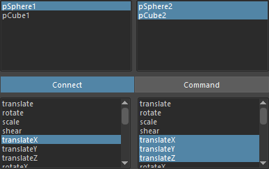
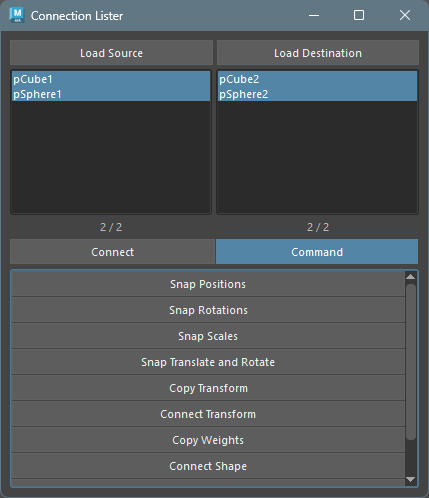

Connection Lister
Overview
This tool is for making connections and copying values between nodes. Also, by using provided commands, you can perform specific operations between nodes.
How to Launch
Launch the tool from the dedicated menu or with the following command.
import faketools.tools.rig.connection_lister_ui
faketools.tools.rig.connection_lister_ui.show_ui()
Usage
The method for loading nodes and attributes is the same as Attribute Lister. Select nodes and press load button to display that node’s attributes in the list.
For displayed nodes, you can connect and copy values
in Connect mode. Also, you can use provided
commands in Command mode.
Connect Mode
To copy values, press Copy Value button
to copy that attribute’s value. To connect attributes,
press Connect button to connect that
attribute.
How to Select Nodes and Attributes
Select the same number of lists from left and right for nodes and attributes displayed in the list,

or as shown in the image, one source node/attribute and multiple target nodes/attributes.

Command Mode
You can use provided commands in Command
mode.
Commands have the same functionality as Pair Command in Single Command. Refer to Single Command documentation.
